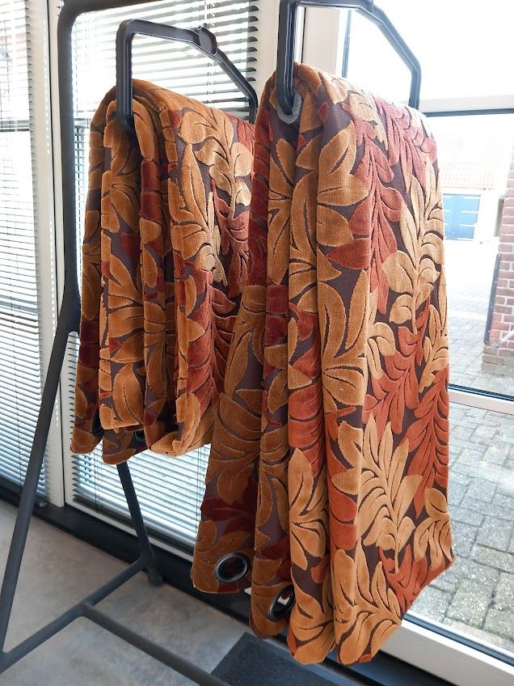
Gordijnen op maat
Van uw eigen stof, met plooi, zeilringen, lussen of striklinten. Ook gevoerd of verduisterend.
Van uw eigen stofMeer info
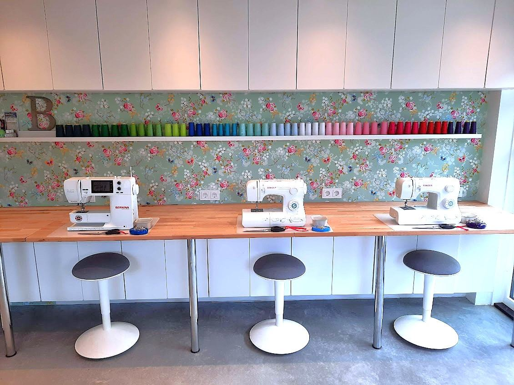
Op maat gemaakt of vermaakt in mijn eigen atelier, voor binnen en buiten. Couturier sinds 1996, en 4 keer per week naailes.
Alles voor de woninginrichting, binnen en buiten. Stuur een foto en de maten, dan krijgt u een prijsopgave.

Van uw eigen stof, met plooi, zeilringen, lussen of striklinten. Ook gevoerd of verduisterend.
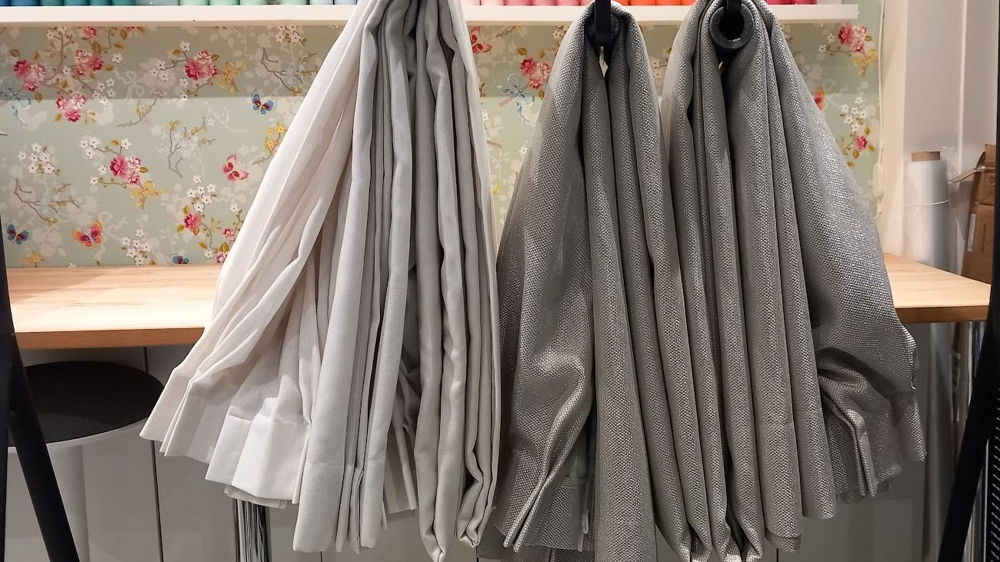
Verhuisd of verbouwd? Korter, langer, smaller of breder maken is goedkoper dan nieuw.
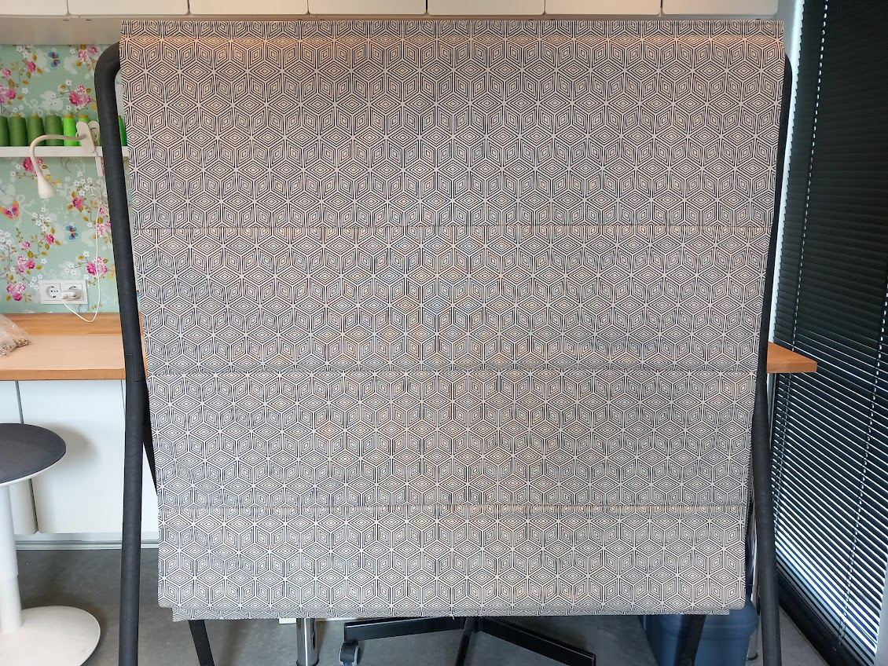
Nieuw van uw eigen stof, of uw oude systeem met nieuwe stof weer als nieuw.
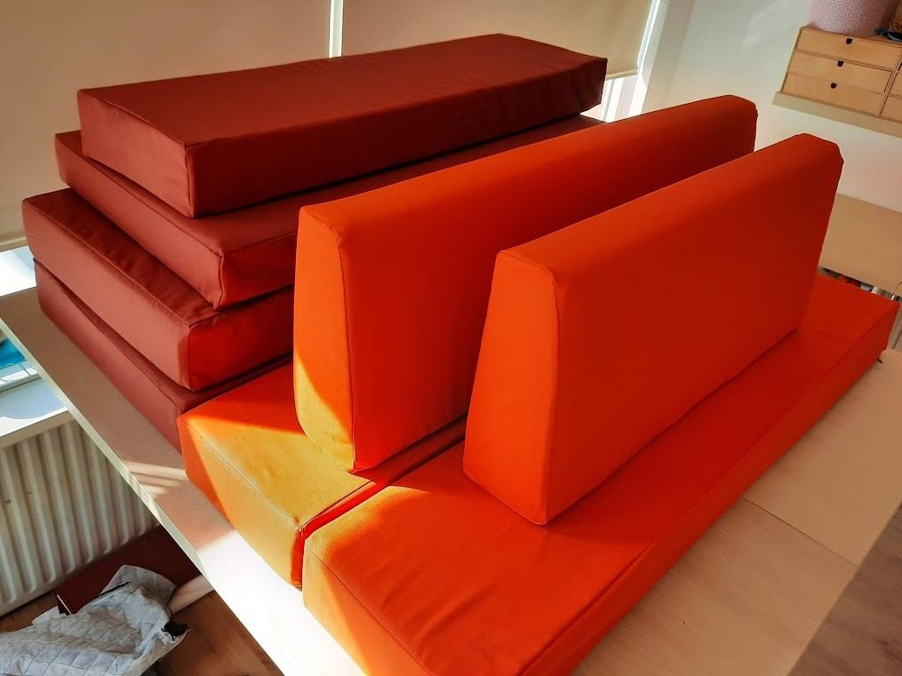
Voor bank, loungeset, caravan, camper of boot. Of alleen nieuwe hoezen om de oude vulling.
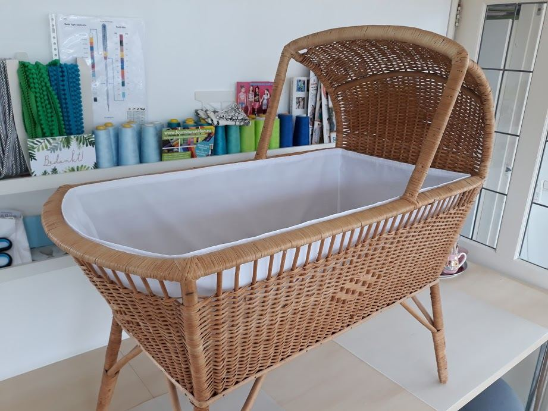
Mijn specialiteit: uw oude familiewieg opnieuw bekleed, met matras, hemel en lakens.
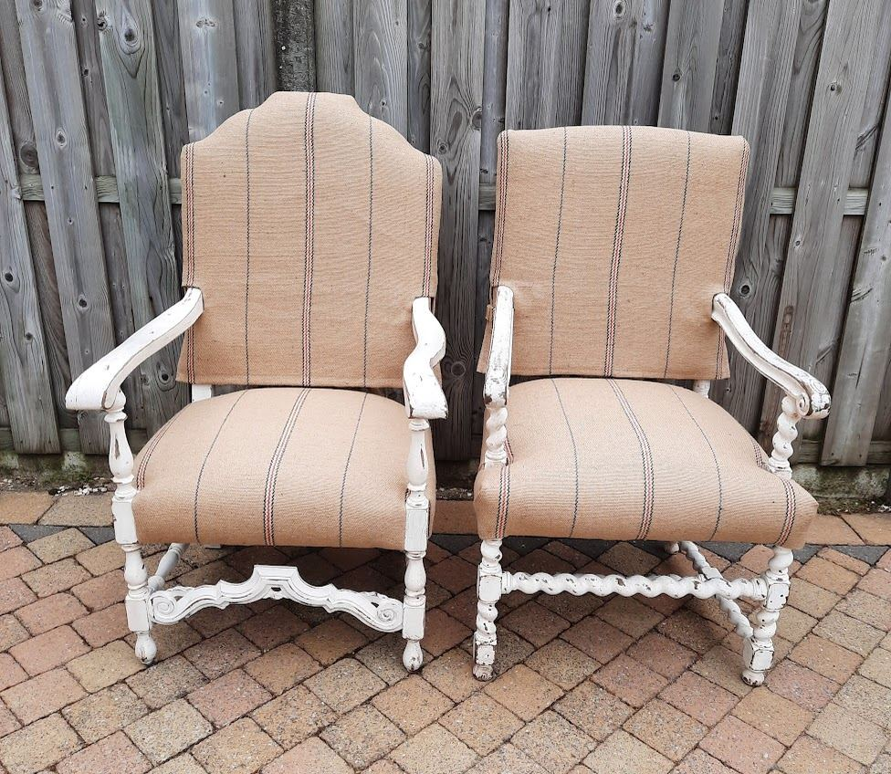
Kleine meubels zoals eetkamerstoelen, fauteuils, poefs en kinderstoelen.
Ook voor: aankleding van baby- en kinderkamers, patchwork, luifels en schaduwdoeken, en freelance productie- en labelwerk. Kledingreparatie doe ik niet.
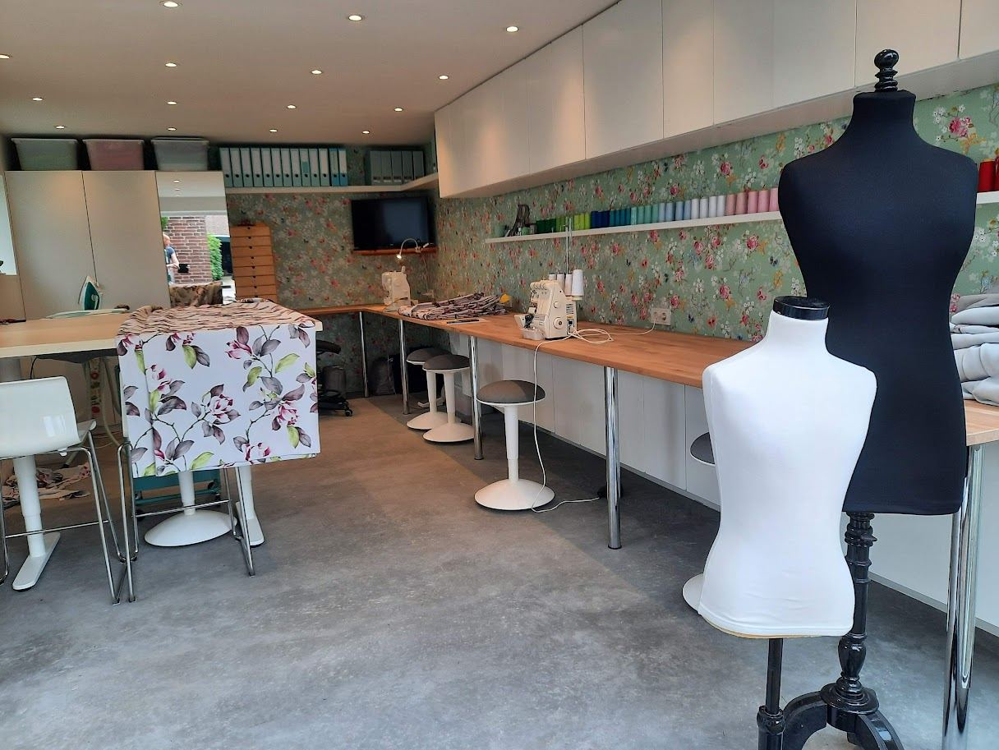
Van september tot februari wordt het atelier één dag per week Atelier 2B en naaien we de hele dag kielen. Met onze eigen patronen, op maat en in de stoffen die u zelf kiest. Van traditioneel blauw tot fluorescerend.
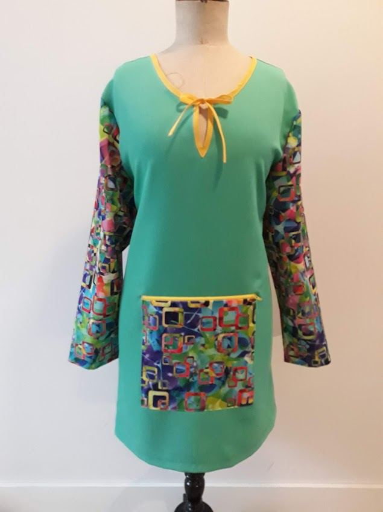
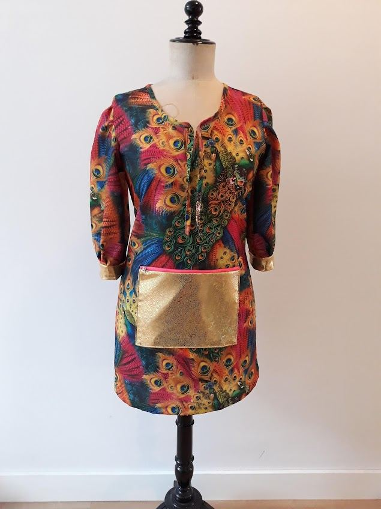
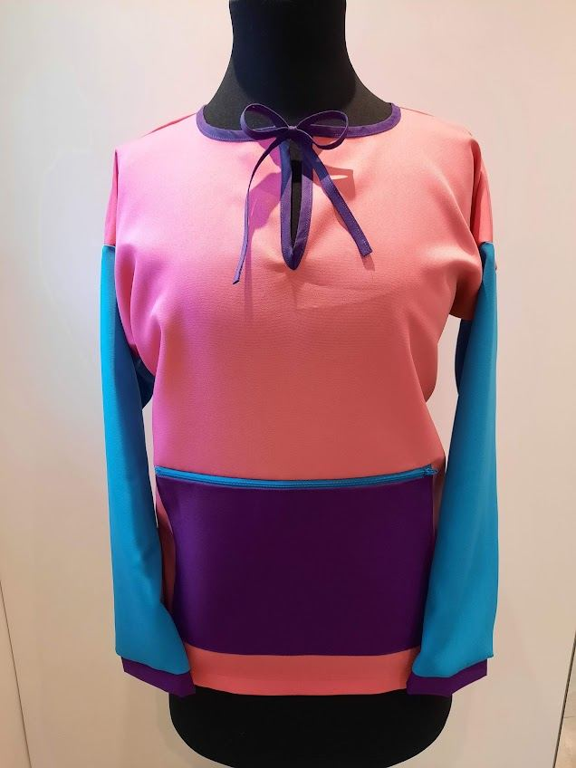
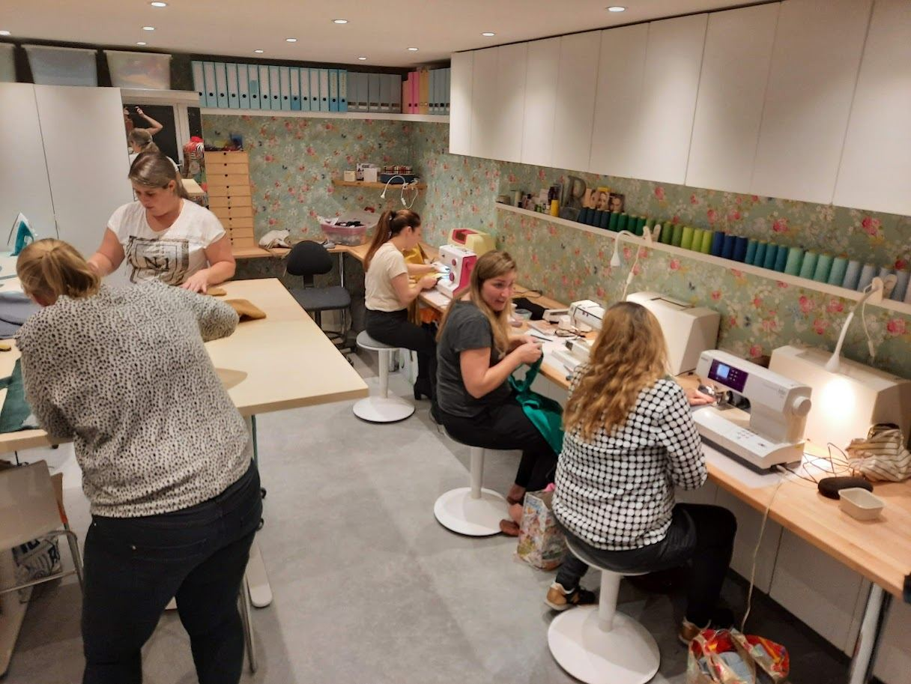
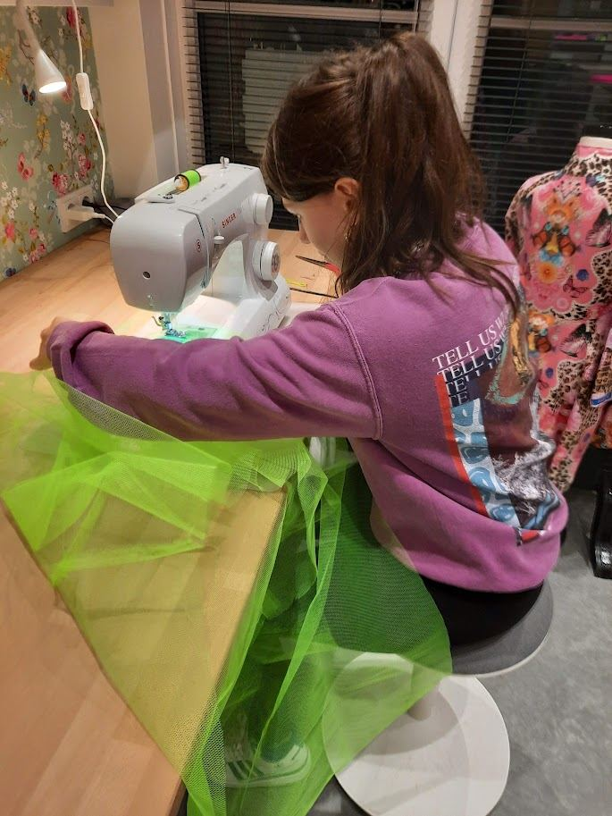
Lessen van 2 uur met maximaal 5 cursisten, onder het genot van een kopje koffie of thee. U maakt wat u zelf wilt en ik help waar nodig. Ervaring is niet nodig.
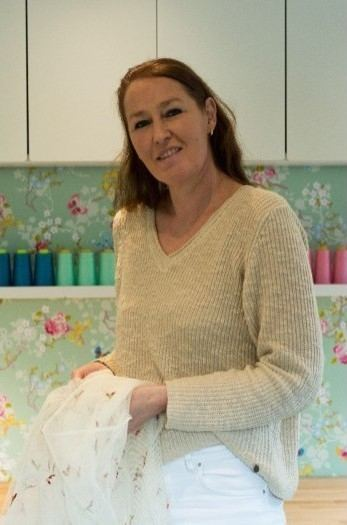
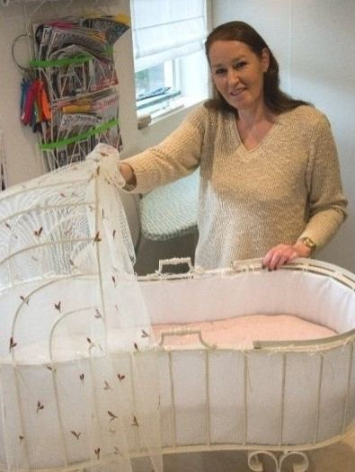
Uw vraag omzetten in het resultaat dat u voor ogen heeft. Ik denk mee en adviseer waar dat kan.
Ik ben Bianca van Gool. In 1996 ben ik afgestudeerd als couturier. Daarna maakte ik jarenlang de aankleding van baby- en kinderkamers op het naaiatelier van Kids Factory in Breda, waar ik ook wiegjes leerde bekleden. Sinds 2004 werk ik vanuit mijn eigen atelier aan huis in Prinsenbeek.
Ik heb van mijn hobby mijn beroep kunnen maken en doe mijn best om dit ambacht levend te houden.
Een vraag of een prijsopgave? Stuur een appje met een foto en de maten, of bel even.
Ik werk op afspraak, van maandag t/m zaterdag.